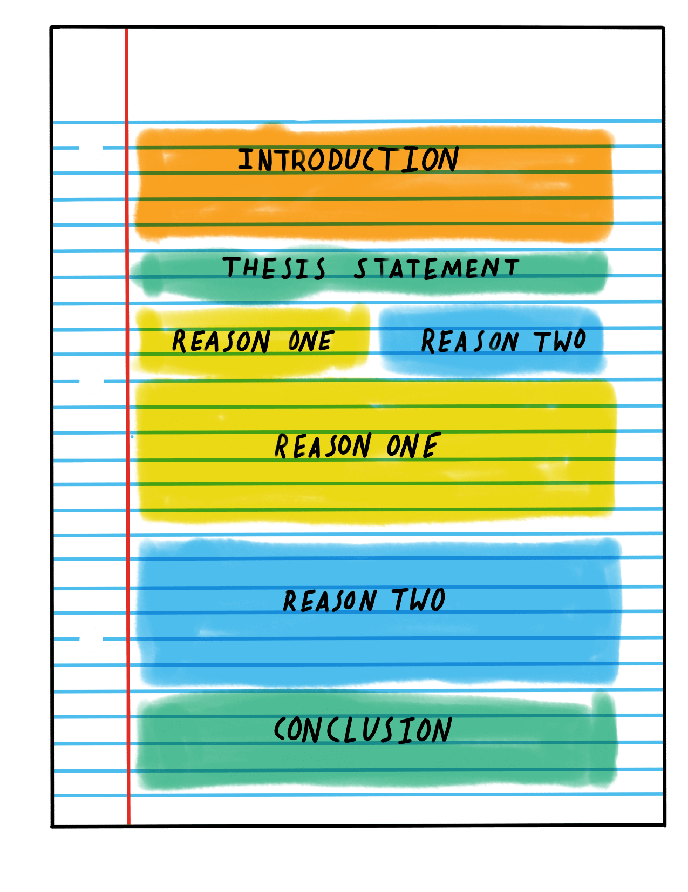

Oh no, the blades did not begin to spin! You must do some troubleshooting to see how all of the pieces fit together. The local mechanic is willing to help you troubleshoot if you help his daughter paint her essay. Remember, a painted essay is an essay that has all of the parts color coded so that we can easily see the structure. Help her paint her essay and her dad will help you troubleshoot your windmill!
---Read the Article---Use the guide below to make each section of the essay the right color. Click each section of the essay to toggle the color, then click "Done".
